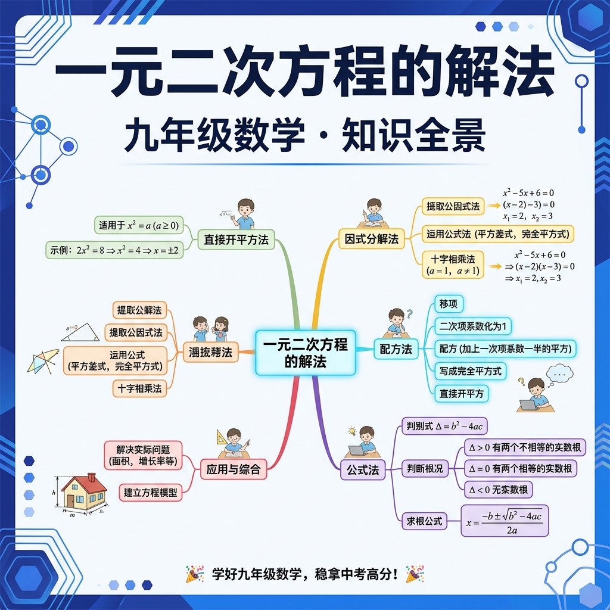

从直接开平方到求根公式，掌握解方程的四把钥匙，破解二次难题

先做几道题，了解你的方程基础～
一元二次方程有四种主要解法，各有适用场景：
篮球从高度 h = -5t² + 10t + 2 处抛出（t秒后高度h米），什么时候落地（h=0）？需要解 -5t²+10t+2=0，二次方程！
条件：能变成 (x+m)² = k 的形式
解方程 (x-3)² = 7
条件：左边能分解因式（右边=0）
解方程 x² + 5x + 6 = 0
⚠️ 禁止两边都除以x！（x=0可能是根，会丢根！）
有些方程不容易因式分解（比如 x²+2x-4=0），配方法把它"变形"成可以直接开平方的形式，是万能方法！
解方程 2x² + 4x - 6 = 0
错误：配方时忘记在右边也加同样的数
x² + 2x = 3 → x² + 2x + 1 = 3（漏了右边+1）
正确：x² + 2x + 1 = 3 + 1（两边同时+1）
阿拉伯数学家花拉子米（9世纪）、印度数学家婆什伽罗（12世纪）逐步完善了这个公式。今天，它是解一元二次方程的万能钥匙！
x₁ ≠ x₂，均为实数
x₁ = x₂ = -b/(2a)
在实数范围内无解
解方程 2x² - 3x - 2 = 0
输入系数，自动用求根公式计算（整数系数）
有时候我们不需要知道根的具体值，只需要知道两根之和与积。法国数学家韦达（16世纪）发现了这一规律！
已知 x²-5x+6=0 的两根 x₁, x₂，求 x₁²+x₂²
| 方程 | 推荐解法 | 原因 |
|---|---|---|
| x² - 7 = 0 | 直接开平方 | 缺b项，形如x²=k |
| x² + x - 6 = 0 | 因式分解 | 整系数，容易分解 |
| x² + 2x - 1 = 0 | 求根公式/配方 | 无法整数分解 |
| 3x² - 4x + 1 = 0 | 求根公式 | 有整数根但系数复杂 |
长方形的长比宽多3cm，面积为40cm²。求宽是多少？（设宽为x cm，建立方程并求解）